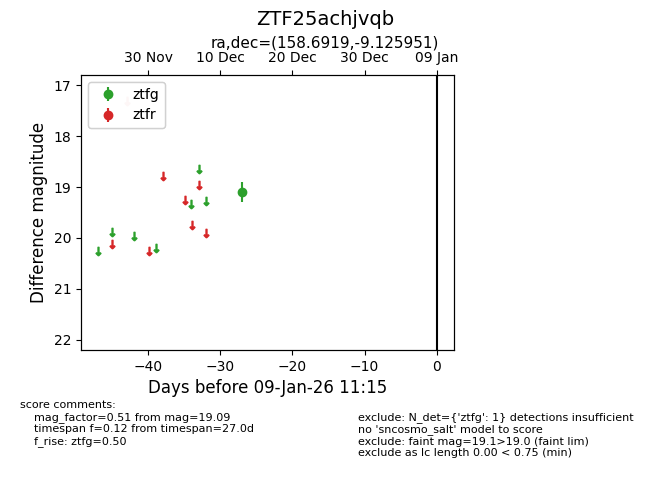
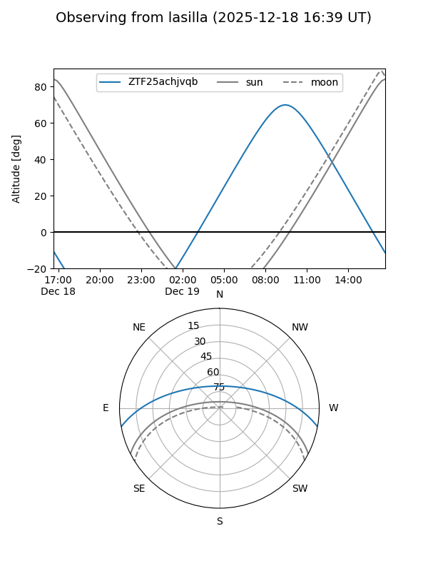
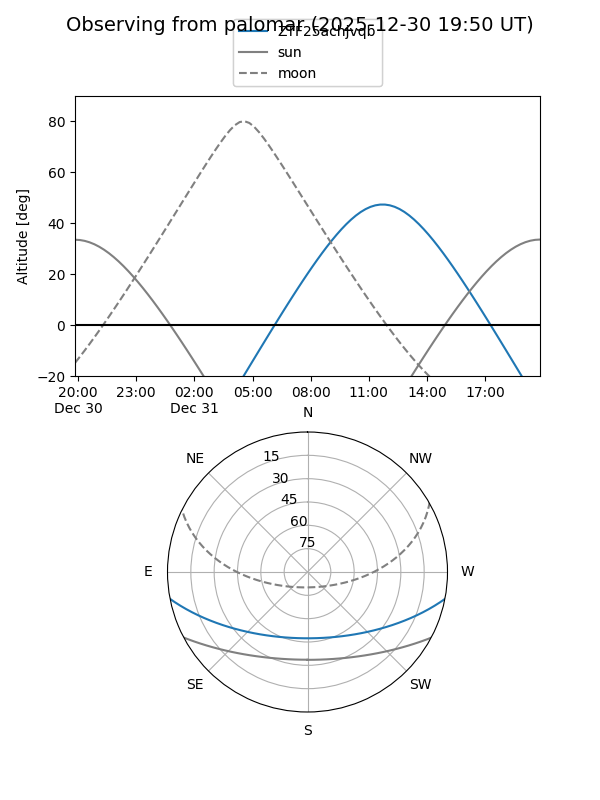

ZTF25achjvqb
Target ZTF25achjvqb at 2025-12-18 11:18
Aliases and brokers:
FINK: fink-portal.org/ZTF25achjvqb
Lasair: lasair-ztf.lsst.ac.uk/objects/ZTF25achjvqb
ALeRCE: alerce.online/object/ZTF25achjvqb
alt names
ZTF25achjvqb (ztf,fink_ztf)
Coordinates:
equatorial (ra, dec) = 158.6919,-9.12595
equatorial (HMS+DMS) = 10:34:46.06,-09:07:33.43
galactic (l, b) = (255.7421,+40.89938)
Photometry
last ztfg=19.09
1 ztfg detections
Lightcurve

Visibility


Additional plots